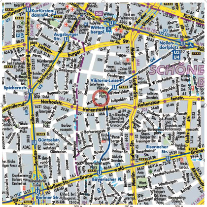

A Walk through Berlin with Andrei Bely
A Walk through Berlin with Andrei Bely

Begin at his last address where he lived from September 1922
until October 1923 at the Crampe Pension located in the historic Viktoria
Luise Platz 9. (U-Bahn Viktoria Luise Platz). You can walk down along Motzstrasse
to Prager Platz, where the famous Prager Diele, Ilya Ehrenburg's Stammtisch
and residence were located and where Bely met Marina Tsvetaeva in May of 1922.
Another frequent hangout was the Flora Diele at Motzstrasse 65 (on the corner
of Martin Luther Strasse).
But be sure to head up toward Nollendorfplatz where the now gone Café
Leon was the meeting place for the Berlin House of Arts. Not far away was
the Café Landgraf at Kurfuerstenstrasse 75, also home to the House
of Arts for a period. Also on Kurfuerstenstrasse 115-116 Russians held their
ball to raise funds for the starving in Russia. At Kleiststrasse 10, the Logenhaus,
Bely would introduce Thomas Mann. who lent his own support to that relief
effort.
If you walk to the famous KDW at Wittenberg Platz, then along Tauenztzienstrasse
you can look left, where a parking garage has replaced Bely's first residence
in Berlin Passauerstrasse 3 bei Boraus. "Der 'Jemand' quartierte sich
in der Passauer strasse ein, Naehe Ecke Witenbergplatz, gegenueber dem beruehmten
KaDeWe (Kaufhaus des Westens), …" No wonder he could write "hier
beginnt der Charlottengrader Kuzneckij Most – Entschuldigung: die, das
Zentrum der russischen <Parties de plaisir> durch Berlin, …."
Off of Wittenberg Platz you can follow Bayreuther Strasse to Number 10 where
the Remizovs would first reside at the Pension Schnabel before moving to something
more permanent at Kirchstrasse 2.
Most of the houses and cafes were destroyed during the war. Curiously when
the city was rebuilt, more often than not a new café arose where an
old one had stood. Two tips for the day-be sure to stop into the museum at
Nollendorf Platz, and take a cup of coffee on the top floor café of
KDW.